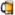
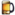

De: La Frikipedia, la enciclopedia extremadamente seria.
De: La Frikipedia, la enciclopedia extremadamente seria. De: La Frikipedia, la enciclopedia extremadamente seria.
| De la serie Elementos químicos: | ||
| ||
| Nombre oficial: | Inglesio | |
| Otros nombres: | Británico, Inglés, Paul | |
| Serie alquímica: | Metales intransigentes | |
| Descubridor: | Thor Svaldvar | |
| Color en tabla: | Rojo corona y blanco puntudo | |
| Presente en: | Efecto pirata inútil | |
| Usos: | Dar subsistencia a todo un pueblo de ignorantes | |
| Estado: | líquido y sólido | |
| Peso kg/puñao: | 434,492 onzas el equivalente a un cliente de Burger King | |
| Estructura: | maleable | |
| Abstracción: | peligrosa | |
| Humungoso: | Mucho | |
«Ey gyew ween ugh mylliel a Liec»
~ Un galés cantando las mañanitas
«Eh? What the Fuck?»
~ Alguien diciendo algo sobre el inglés
«Me suena a un té de boldo»
~ Tú diciendo incoherencias sobre el Inglesio idiota
«Ah! un Earl Gray por favor»
~ Tú dejándote llevar por la magia inglesa
«Una deliciosa vejiga de cordero»
~ Tú dejándote llevar por la cocina inglesa
Es el elemento químico número 53 de la tabla periódica que fue recientemente descubierto por varios científicos daneses que aunque estuviera totalmente presente en las islas británicas, resultaba muy difícil poder insertarse en urbes productoras como la Ciudad de Londres que les costó mucho a los investigadores debido a la nocividad del elemento que acabo con el único subordinado congoleño del grupo.
Inglesio es un derivado de Inglaterra que proviene del alemán Ing = estrecho y Terra = Tierra, es decir "tierra estrecha" debido a que todos sus habitantes poseían una cavidad anal muy estrecha difícil de penetrar.
Los ingleses son el resultado de una mezcla de alemán y subespecies del parásito francés. De tanto haber heredado los peores defectos han hecho que algunos los hayan caracterizado ante los ojos del mundo:
Ya durante la Prehistoria el elemento empezaba a tomar protagonismo y estaba alojado como un parásito en las más primitivas formas de vida que actualmente habitan el territorio. Cuando los romanos llegaron en el siglo I antes de Cristo encontraron la niebla, el olor a mierda, pantanos, mosquitos, y McDonalds en todas partes. Los romanos construyeron muros, acueductos, carreteras, estacionamientos y así el elemento se fusiono y formo aleaciones con otros metales de poca importancia estabilizándose.
Luego de la dominación romana llegaron los anglos, los sajones, los vikingos, los mandingas y tomaron posesión de los aborígenes de la isla , por lo que todo eso forjo el lugar frío e inhóspito que tanto valoramos hoy como Inglaterra.
Los nuevos ataques del elemento en los niños han producido aún más dinero para las fabricas de Tapioca donde trabajan. Así que, con ello, los británicos empezaron a construir máquinas (que en realidad habían sido creadas por algún francés, alemán o estadounidense), pretendieron que las hicieron a mano de algo decente, porque este negocio donde el el robo es tan solo un fuerte pueñetazo en la cara, ya estaba mal. Para disimular, dijeron que las máquinas fueron utilizadas para este tipo de "revolución industrial" e inventaron el capitalismo - donde continuaron robando descaradamente, pero ahora con un poco de estilo Inglés de extorsión.
Debido a la falta antes mencionada de creatividad de las máquinas británicas, y que sólo sirvió para hacer cosas inútiles y desagradables (o ambas), tales como bates de críquet (para patearle el trasero en irlandés), sombrillas de coco, raquetas de tenis, club de golf Madera 4; las novelas de Jane Austen; cuellos desengomadores, césped artificial, la prensa sensacionalista, la caza de ropa viadinho (atención, no es "un tecnosexual cazador" es "cazador tecnosexual", incluso), y los Beatles. Con todas estas cosas se empezaron a amontonar en la isla (y al tomar el espacio el espacio sobrante para plantar hierba causo que el elemento estallara hacia afuera, por el cual tienen una inexplicable adoración comprimida), se decidió exportar sus "productos" de la industria.
Nadie quería que estos "productos", pero el Inglés no deseaba seguir perdiendo dinero: cuando los países se negaron a comprar tal mierda de producto, loas ingleses enviaron a los buques de la Royal Navy con todos sus muchachos y los obligaron a consumir. España, a su vez era el mejor comprador de Inglaterra, y debido a esto es la razón por la que los españoles están en quiebra hoy. Todo el mundo ha perdido dinero por causa de los británicos durante este período (los que hicieron bien fueron los suizos, que no tienen salida al mar) por lo que todo el conjunto de Europa odia a los Ingleses.
Cuando nace un inglés es una gran alegría porque es un evento muy raro: la relación sexual entre dos individuos de la misma especie (humana) y de diferentes géneros es extremadamente rara. Más raro aún es una relación sexual satisfactoria. Por otra parte, este fenómeno sólo se registra en el verano (que, en Inglaterra, este año se redujo al día 03 de junio ). Lo más común es lo contrario - es decir, el contacto entre personas del mismo sexo y otra especie. Ejemplos: Elton John y el Big Ben, el príncipe Carlos y Camilla Parker Bowles.
Cuando son jóvenes positrones y neutrones, llegando a la edad de 3.87 metros y cuatro peniques, el inglés debe elegir su "estilo de vida" , algo que va a definir su futuro para siempre. Sus únicas opciones de elección son:
() "Ladrón sin destino" (también opciones válidas "piratas", "carterista", etc)
() Gay cornudo
() Gay, pentasexual, pansexual, Boy George (etc.)
() Todo lo anterior.
¿Quién no desearía optar por cualquiera de las posibilidades que se envía a la Armada Real de Su Majestad la Reina? Por supuesto se le acaba el tiempo en tres, dos, uno...
Para estudiar en Ethon, existe la posibilidad de ser un ladrón, cornudo o gay, pero con el tratamiento de "Sir". En términos prácticos, el título de "Sir" no significa una mierda. Sin embargo, el Inglés le dan mucha importancia a la misma. Después de todo, sirve para distinguir entre las multitudes. Por ejemplo, si alguien en el medio de la multitud Hertwshamforestshireham grita "¡Oye, maricón!" Se recibe la respuesta en un coro de miles de voces supuestamente masculinas ("¿What?") Pero si usted llama "señor maricón!" Sólo responden tres o cuatro.
Elegida la vida que quiere ser, el inglés pasará el resto de su vida hasta 22hs en los bares para beber mientras ve un partido de fútbol de tu equipo favorito - como Chaterburgshireham city, por ejemplo - en el "Late Night" para ir a la cama con un amigo de la multitud después de golpearlo con su cartera.
El Inglés no es muy creativo y no sabe cómo resolver los problemas más simples. Así que cuando usted tenga un problema o necesidad de algo, consulte a un inglés.
Posee una cultura donde el robo es un acto de honor (Su héroe nacional es Robin Hood), los británicos querían tener dinero, pero no deseaban trabajar. Así que decidieron robar el oro que los españoles robaron a los Estados Unidos. La Corona puso en marcha el concurso "quieres ser también un noble" y miles de aventureros se apresuraron a la piratería. Los 10 más grandes ladrones dhabían ganado el título de "Sir" y el asiento (con pasador de seguridad) en la Cámara de los Lores. El campeón fue Sir Francis Drake. El segundo cuyo nombre nadie se acuerda además de ser el primer presidente de la FIFA.
Otras peculiaridades culturales de estos sujetos son las siguientes:
En vista de la homosexualidad (latente o explícita), todos los ingleses se sienten con el cuerno medio, pero en realidad, es la ley. El símbolo mítico de la nación tiene su explicación en el Rey Arturo: sentado en el trono por accidente, era un ayudante de mago, y se casó con "esa perra" de Ginebra, que lo traicionó, dando a cada uno una treta planeada por el perverso Lanzarote (que era francés), por el cual Arthur estaba enamorado y con quien tuvo un romance porque le gustaban malotes.
El mito creado en el "complejo de Arthur", que afecta a la población británica entera en una forma endémica, lo que resulta en la llamada "paradoja de Albion" , "Si no estoy corneando soy gay, si no estoy corneando con homosexuales". Otelo es el personaje que mejor ilustra esta característica.
Esta paranoia con cornisas hace que la mujer Inglés, por temor a ser vandalizada, huya de un profundo horror injustificado. Participar con ellos son los principales riesgos. La misma "Shakespeare moral" (Shakespeare era también "una bichoooona") es compatible con este axioma de que "la mejor mujer esta para evitarse". De lo contrario, tenga en cuenta el resumen de las principales vías de la comunidad gay bardo:
No me impresionó que estas historias picarescas hayan tenido tanto éxito.
Y recuerde: todavía en el reino de la ficción, las mentiras más grandes se pueden ver en la película de James Bond en donde los artefactos no son tan locos como se ven (bolsa de aire más ligera, un láser submarino,papel higiénico, vibrador digital, etc), pero, de hecho, el personaje principal es una "mujer Inglés que le gusta a Bond" (por el amor de Dios!).
En Gran Bretaña y otros países de habla inglesa como los EE.UU., la gente nunca oído hablar de metros y sus derivados, ya que utilizan sus propias yardas, pulgadas, brazas, y el diablo de linguadas para medir todo lo que puedas imaginar!
Tabla periódica de los elementos
| ||||||||||||||||||||||||||||||||||||||||||||||||||||||||||||||||||||||||||||||||||||||||||||||||||||||||||||||||||||||||||||||
|
|
 Alcohol 
Drogas
Productos de Limpieza
|
Autor(es):